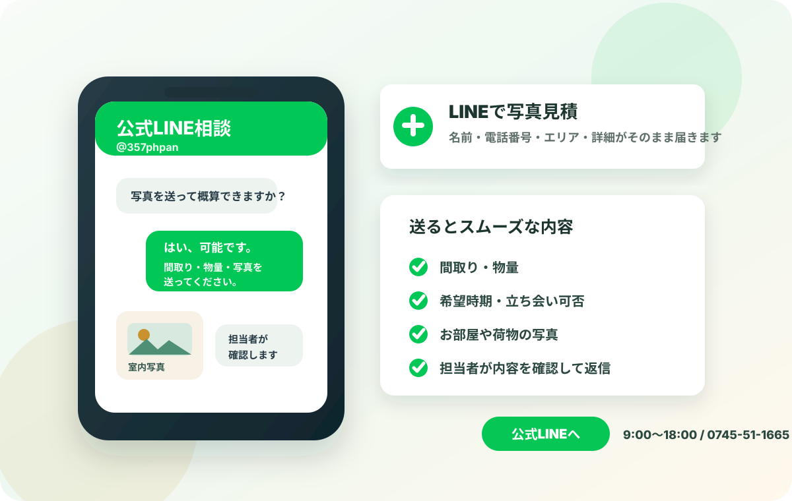

何から始めればいいか分からない
残す物、探す物、処分する物を一緒に整理。形見分けや貴重品探索も進行表に落とし込みます。
大阪・兵庫・奈良・京都 / 見積無料 / 最短即日
写真をLINEで送るだけでも概算相談OK。仕分け、貴重品探索、供養、買取、搬出、清掃まで、面倒なことをまとめてお任せください。


残す物、探す物、処分する物を一緒に整理。形見分けや貴重品探索も進行表に落とし込みます。
即日見積、当日作業、複数名体制で短期完了。管理会社への引き渡し前清掃まで対応します。
鍵の受け渡し、写真・動画報告、必要品の配送、作業後の精算まで非対面で進められます。
人件費、車両費、処分費、分別費を含めて総額提示。買取可能品はその場で査定します。
他社見積が高いと感じた方へ
現場の状況はご家庭ごとに違います。写真を送っていただければ、物量、搬出経路、買取できる品の有無まで見ながらご案内します。


写真、通帳、印鑑、権利書、鍵、貴金属など、重要品は確認箱へ。誤処分を防ぎます。
人形、仏具、手紙、衣類など、処分しづらい品も提携寺院で供養可能です。
家電、家具、骨董、ブランド品、工具、着物などを査定。買取額を作業費から差し引けます。
孤独死、長期放置、害虫、臭気がある現場も、清掃計画を分けて安全に対応します。
片付けるだけで終わらせず、まだ必要とされる品を次の方へつなぐことまで大切にしています。
インターネット事業にも力を入れているため、家具、家電、工具、骨董、ブランド品、趣味用品、生活雑貨まで、店頭だけでは届きにくい買い手にもつなげられます。国内だけでなく海外需要も見ながら、買取できる物をできる限り見落とさないよう確認します。
整理、仕分け、搬出、買取、供養、清掃まで、すべてプロにお任せいただけます。
交通費 + 人件費 + 作業費 + 諸経費 - 買取金額 = 請求金額
下記は一般的な目安です。必要な費用から買取金額を差し引き、物量や時期に合わせて最終金額をご提示します。
25,000円〜
70,000円〜
150,000円〜
間取りと物量を選ぶと、おおよその目安を表示します。
| 比較項目 | 当サービス | 格安回収業者 | 清掃のみ業者 |
|---|---|---|---|
| 遺品の仕分け | 重要品探索まで対応 | 処分中心になりがち | 対応外が多い |
| 料金 | 総額提示・追加なし | 当日加算のリスク | 処分費が別 |
| 供養 | 提携寺院で対応 | 対応不明 | 対応外 |
| 買取 | 査定額を費用から相殺 | 品目限定 | 対応外 |
| 遠方対応 | 鍵預かり・写真報告 | 現地立ち会い前提 | 要相談 |

2名で仕分け、搬出、簡易清掃まで実施。貴重品と写真は確認箱にまとめ、当日中に完了。
作業費 38,000円
鍵をお預かりし、写真報告しながら進行。必要書類を探索し、家具家電の一部を買取。
作業費 168,000円
防護管理、搬出、除菌、消臭、床材撤去を分けて施工。管理会社への報告資料も作成。
作業費 240,000円状況、住所、希望日、立ち会い可否をお聞きします。写真だけの概算も可能です。
物量、搬出経路、買取品、供養品を確認し、作業範囲と総額を提示します。
残す物、探す物、供養する物、買取する物を分けながら、丁寧に搬出します。
簡易清掃後、写真で完了報告。必要品の配送、供養証明、買取明細もお渡しします。
母の部屋を前に何も進められませんでしたが、探す物を確認しながら進めてくれて安心できました。
50代 女性 / 大阪市遠方で立ち会えず不安でしたが、写真報告が細かく、鍵の返却まで丁寧でした。
40代 男性 / 神戸市他社見積より高かった理由まで説明してくれて、買取分で予算内に収まりました。
60代 女性 / 京都市大阪府大阪市、堺市、豊中市、吹田市、高槻市、枚方市、東大阪市、八尾市、岸和田市ほか
兵庫県神戸市、尼崎市、西宮市、芦屋市、明石市、姫路市、宝塚市、伊丹市ほか
京都・奈良・滋賀・和歌山主要エリア即日見積。遠方・山間部も日程調整で対応可能です。
無料です。見積後にキャンセルされても費用はかかりません。作業範囲と総額に納得いただいてから進めます。
見積時に確認した作業範囲内であれば追加費用はありません。追加作業が必要な場合も、必ず事前に金額を提示します。
可能です。鍵の受け渡し、作業前後の写真報告、必要品の配送、オンライン精算まで対応します。
通帳、印鑑、権利書、保険証券、写真、貴金属、鍵など、事前に探索リストを作成して重点的に確認します。
供養やお焚き上げをご案内できます。宗派や供養方法の希望がある場合もご相談ください。
お部屋全体、押し入れ、家具家電の量が分かる写真があれば、担当者が内容を確認して概算をお伝えします。遠方や立ち会いが難しい場合もご相談ください。
急ぎ、遠方、費用確認だけでも大丈夫です。分かる範囲で入力してください。折り返し時に、最短日程と概算費用をお伝えします。

公式LINEなら入力内容がそのまま届きます 名前・電話番号・エリア・相談内容・詳細を送信後、内容が揃っていれば担当者が確認して返信します。不足があればLINEで追加確認します。